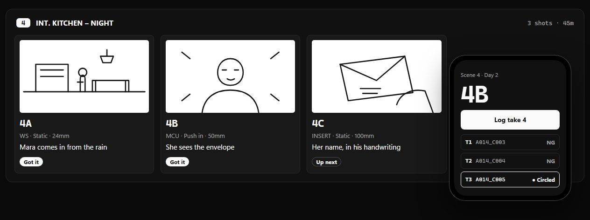

Software · slate.ruytha.dev
Slate.
Plan the shoot. Log every take. Slate turns a script into shot lists, storyboards and shoot days, shares the call sheet with a link, and keeps the take log on set, even with no signal.
Free. One account for every Ruytha Studios app.

From a script to a wrap in four moves.
- Script
Scenes and shots
Headings and page counts, then each shot: size, movement, lens, angle, and how long the setup takes.
- Sketch
Storyboard on the shot
Draw with a finger, a pen or a mouse, in the project's aspect ratio. Or drop in a reference picture.
- Plan
Shoot days that add up
Pick the scenes and who's called when. Slate warns you if the day runs past wrap before anyone is on set.
- Roll
A take log from your phone
Slate fills in the next clip name. Circle the good takes and mark the rest NG.
A call sheet the whole crew can open.
Share a shoot day as a link. It opens on any phone with no account and no app: general call, location, parking, the nearest hospital, every scene and shot, and who's called when.
- No account, no appThe link opens in any phone browser.
- Always the latestChange the day and share again. The same link shows the update.
- Private by defaultPhone numbers stay off unless you include them. Stop sharing and the link stops working.
Built for one hand, in a basement with no signal.
- Works offlineProjects live on your phone first and sync when there's a connection.
- One tap per takeThe next clip name is filled in, and the shot moves on when you've got it.
- Know where you standSlate compares the clock with the plan: how far ahead or behind the day is.
- On your home screenAdd it on iPhone or Android and it opens full screen, like any app.
The notes from set meet the footage.
Open a camera file in Shutter and the takes you logged for it are right beside the notes: which shot it was, whether it was circled, and what you said on the day. Back in Slate, every take shows whether it's been reviewed.